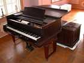

В Тронхейме есть что посмотреть путешественнику. Это и Еврейский Музей, и музей Сверресборг, Тронхеймский музей искусства и Музей науки. Для интересующихся древней историей открыт музей Сверессборг, крепость Кристиансен и о.Мункхольмен. В 2010 года открылся еще один интересный музей Тронхейма. Это Рокхейм - национальный музей популярной музыки Норвегии. В этом музее собраны материалы, связанные с норвежской музыкой, от 1950 г. по настоящее время. В другом Тронхеймском музее музыки Рингве собраны музыкальные инструменты со всех концов света. Музей насчитывает около 2000 экспонатов, которые тщательно собирались сотрудниками музея с момента его открытия в 1952 году. Музей находится на территории старинной усадьбы, с постройками XVIII-XX в.в. Он окружен красивейшим ботаническим садом и прекрасным видом на Тронхеймский фьорд. Особенно гордится Рингве своими европейскими струнными и клавишными инструментами. В числе экспонатов музея можно увидеть итальянский вёрджинел XVII в., спинет и множество клавикордов XVIII в., клавесин Якоба Киркмана 1867 г., скрипку Амати 1612 г. и др.